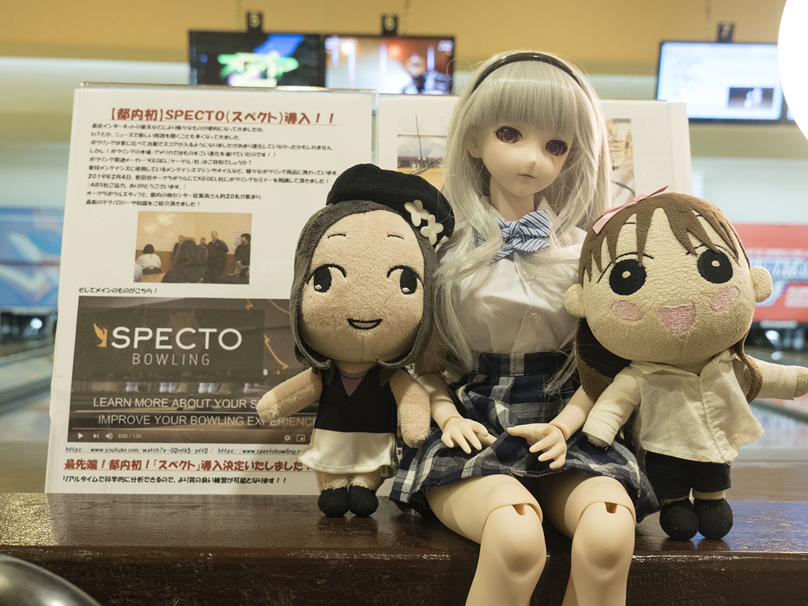
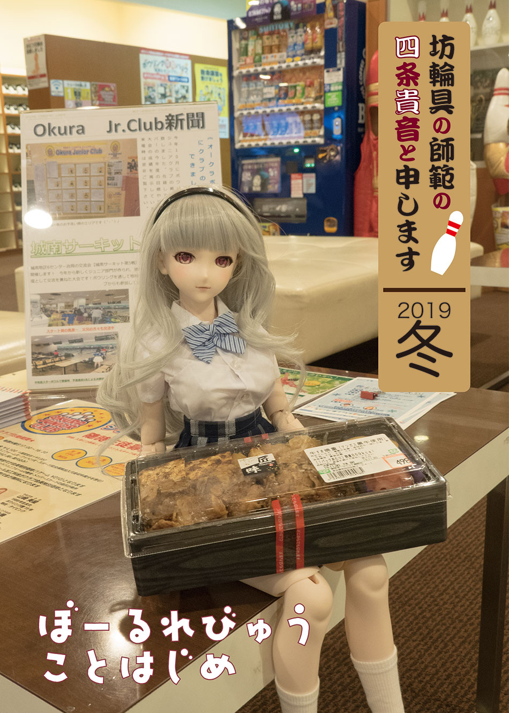

<!doctype html>
<html prefix="og: https://ogp.me/ns#"><!-- InstanceBegin template="/Templates/index.dwt" codeOutsideHTMLIsLocked="false" -->
<head>
<meta charset="UTF-8">
<!-- InstanceBeginEditable name="doctitle" -->
<title>坊輪具の師範の四条貴音と申します　うぇぶ版</title>
<!-- InstanceEndEditable -->
<meta name="viewport" content="width=device-width">
<link href="../../css/style.css" rel="stylesheet" type="text/css">
<script src="../../js/jquery-3.4.0.min.js"></script>
<script>
    $(function () {
        $('#navToggle').click(function() {
            $('#gloval-nav').slideToggle();
        });
    });
</script>
<!-- スマートフォン -->
<link href="../../css/smartphone.css" rel="stylesheet" type="text/css" media="only screen and (max-width:767px)">
<!-- タブレット -->
<link href="../../css/tablet.css" rel="stylesheet" type="text/css" media="only screen and (min-width:768px) and (max-width:949px)">
<!-- デスクトップ -->
<link href="../../css/desktop.css" rel="stylesheet" type="text/css" media="only screen and (min-width:950px)">
<!-- InstanceBeginEditable name="head" -->
<!-- InstanceEndEditable -->
<!-- InstanceParam name="equip_nav" type="boolean" value="false" -->
</head>
<body>
<header class="basicinfo">
    <figure><a href="../../index.html"></a></figure>
</header>
<div class="basicinfo" id="nav">
 <div id="navToggle">
 <button type="button" id="navbtn">
 <div class="navbar1"></div>
 <div class="navbar2"></div>
 <div class="navbar3"></div>
 <span>めにゅう</span>
 </button>
 </div>
 <nav id="gloval-nav">
   <ul>
     <li><a href="../../equipments/index.html">用具れびゅぅ</a></li>
     <li><a href="../index.html">技術論</a></li>
     <li><a href="../../bowling-centre/index.html">ぼうりんぐ場訪問記</a></li>
     <li><a href="../../note/index.html">雑記</a></li>
     <li><a href="../../contact.html">お問い合わせ</a></li>
   </ul>
 </nav>
 </div>
<div class="basicinfo" id="main">
  <div class="main_article">
  <!-- InstanceBeginEditable name="main_article" --><article class="story-body">
<section class="story-header">
 <h2>楽しいSPECTO その１</h2>
 <time datetime="2020-3-3"><p>2020年3月3日</p></time>
 <figure class="story-hero-img">
    
 </figure>
</section>
<section class="story-section">
 <p>　傍若無人なぬいぐるみたちに自己を省みることを教授するにはどうしたらいいか日々悩む坊輪具の師範の四条貴音です。<br>
  　さて、本誌２０１９年冬号でも少し触れたSPECTOについて何回かに分けて記載したいと思います。<br>
   　SPECTOはKegel社が販売しているComputer-Aided Tracking System（以下CATSと表記）と呼ばれるものです。レーン上の設置されたセンサー（図１）によりレーン上ボールの位置を逐次計測することによりボールの軌道はもちろんのこと球速、回転数なども正確に計測することができます。近年のPBAの中継では選手の回転数や球速、また投球ラインを示すために使われており、視聴者に客観的かつ分かり易い試合の展開を伝えています。</p>
</section>
 <section class="story-section">
   <figure class="story-img">
   
   </figure>
   <h4>図１ SPECTOのセンサー<br>
   ガターとガターの間に見える円形の蓋の下にあるのがSPECTOのセンサーである。このセンサーでボールの動きを捉えて計測する。</h4>
   </section>
<section class="story-section">
 <p>　SPECTOには基本的な計測をすることができる「PERFORMANCE」と練習機能に特化した「WORLDS」と「CHALLENGES」があります。<br>
 　「PERFORMANCE」ではボールの軌道を計測し、専用のアプリケーションによりタブレットやコンピューターの画面に表示することができます（図２）。それ以外にも単にボールの軌道を表示するだけではなく、ボールやボウラーのスキルの評価機能や特定の練習を行う機能もあります。</p>
</section>
<section class="story-section">
<figure class="story-img">
 　
 </figure>
 <h4>図２ 「PERFORMANCE」でのSPECTO appでの画面表示<br>
   SPECTOの基本的なモードである「PERFORMANCE」での計測例を示す。<br>
   上の表にはボールの位置やポケットへの入射角球速や回転数等の数字のデータが示されている。下の図はボールの軌道のイメージを示しており、スキッド、ロール、ロールアウトがそれぞれ青、赤、緑で塗り分けられている。</h4>
</section>
<section class="story-section">
 <p>　「WORLDS」はSPECTOから繰り出される様々な課題をクリアすることを目指すモードです。難易度は「初心者」から「スーパースター」までの４段階ありますので初心者からプロまで幅広く楽しめます（図３）。</p>
</section>
<section class="story-section">
<figure class="story-img">
 　
 
 </figure>
 <h4>図３ 「WORLDS」は上のように各面10 の課題をクリアしていくモードである。各面で課されるタスクは下の図のようにとりあえずガターにボールが落ちなければ良いというところから、針の穴に糸を通すような難易度まで様々である。
 </h4>
</section>
<section class="story-section">
 <p>　また、「CHALLENGES」では「MASTER OF CORNER PINS」と「SPEED LADDER」というゲームができます。「MASTER OF CORNER PINS」はコーナーピンと呼ばれる７ピンと10ピンを何回連続して取れるかを競って遊ぶことができるモードです（図４）。「SPEED LADDER」は一定の速度で連続して投げる練習をゲーム感覚で楽しみながら練習できます。どちらもwebサイトにスコアが登録できますので、世界中のボウラーとスコアを競うことができます。</p>
</section>
<section class="story-section">
<figure class="story-img">
 　
 
 </figure>
 <h4>図４「MASTER OF CORNER PINS（上）」と「SPEED LADDER（下）」<br>
 「MASTER OF CORNER PINS」は１０ピンを狙った時のものである。１０ピンを倒した回数だけではなく、どこを通ってピンを倒したかも記録される。
 「SPEED LADDER」は最初に投げた球速と同じ速度で何回投げれるかを競うモード。「YOU CAN」が一番簡単だが割と難しい。「NO WAY」は本当に「NO WAY!」と叫びたくなるくらい難しい。
 </h4>
</section>
<section class="story-section">
 <p>　このようにSPECTOは単にボールの軌道を確認したり、ボウラーの回転数や球速を計測するだけではなく、豊富な練習機能により楽しく坊輪具の上達ができる大変優れた機器です。国内に設置されているところは限られますが、お近くの方は是非遊んでみてください。</p>
</section>
<section class="story-section">
<h2>参考資料　SPECTOが設置されているボウリング場</h2>
 <p>SPECTOが設置されている日本国内のボウリング場をまとめました。SPECTO appの情報を元に記載しましたが、webサイトでの記載がまちまちですので各ボウリング場に一度問い合わせてみることをお勧めいたします。</p>
 <table>
  <tr>
    <th id="centre_place" scope="col">所在地</th>
    <th scope="col">センター名</th>
  </tr>
  <tr>
    <th scope="row">愛知県</th>
    <td><a href="https://asobix-bisai.jp">アソビックスびさい</a></td>
  </tr>
  <tr>
    <th scope="row">愛知県</th>
    <td><a href="https://asobix-kanie.jp">アソビックスかにえ</a></td>
  </tr>
  <tr>
    <th scope="row">千葉</th>
    <td><a href="http://yachiyodai.ps-vega.com">八千代台ボウル</a></td>
  </tr>
  <tr>
    <th scope="row">藤沢</th>
    <td><a href="http://www.a-bowl.jp/enoshima_bowl/">江の島ボウル</a></td>
  </tr>
  <tr>
    <th scope="row">群馬</th>
    <td><a href="https://dreamstadiumota.com">ドリームスタジアム太田</a></td>
  </tr>
  <tr>
    <th scope="row">沖縄</th>
    <td><a href="https://kadenafss.com/recreation/bowling/">EMERY LANES</a></td>
  </tr>
  <tr>
    <th scope="row">沖縄</th>
    <td><a href="https://www.enagicbowl.com">エナジックボウル</a></td>
  </tr>
  <tr>
    <th scope="row">札幌</th>
    <td><a href="https://www.sugai-dinos.jp/bowling/shiroishi/">ディノスボウル札幌白石</a></td>
  </tr>
  <tr>
    <th scope="row">静岡</th>
    <td><a href="http://nandk.net/bowling/kitsunegasaki-younground">狐ケ崎ヤンググランドボウル</a></td>
  </tr>
  <tr>
    <th scope="row">東京</th>
    <td><a href="http://www.okura-bowl.jp/okuraland/bowling/">世田谷オークラボウル</a></td>
  </tr>
 </table>
 <h4>EMERY LANESは米軍基地内にあるため、一般には解放されていないかと思われます。</h4>
</section>
</article><!-- InstanceEndEditable -->
  </div> 
  <div class="sidebar">
    <aside class="backissue"> 
    <h3>刊行物のおしらせ</h3>
    <section class="dojinshi">
<<<<<<< HEAD
          <figure></figure>
      <p>２０１９年冬号委託開始！</p>
      <p><a href="https://order.mandarake.co.jp/order/detailPage/item?itemCode=1126800063">まんだらけ</a></p>
      <p><a href="https://www.melonbooks.co.jp/detail/detail.php?product_id=608428">メロンブックス</a></p>
        </section>
    <section class="dojinshi">
          <figure></figure>
      <p>２０１９年夏号は各書店に委託中です！</p>
      <p><a href="https://order.mandarake.co.jp/order/detailPage/item?itemCode=1117559845">まんだらけ</a></p>
      <p><a href="https://www.melonbooks.co.jp/detail/detail.php?product_id=543669">メロンブックス</a></p>
        <p><a href="https://www.melonbooks.com/index.php?main_page=product_info&products_id=IT0000215671">メロンブックスDL</a></p>
    </section>
    <section class="dojinshi">
      <figure></figure>
      <p>２０１７年冬号は各書店にて委託中</p>
      <p><a href="http://order.mandarake.co.jp/order/detailPage/item?itemCode=1079983618">まんだらけ</a></p>
      <p><a href="https://www.melonbooks.co.jp/detail/detail.php?product_id=526063">メロンブックス</a></p>
      <p><a href="https://takaminedou.booth.pm/items/683334">BOOTH</a></p>
=======
      <figure></figure>
      <p>２０１９年冬号</p>
      <p><a href="https://order.mandarake.co.jp/order/detailPage/item?itemCode=1126800063">まんだらけ様</a></p>
      <p><a href="https://www.melonbooks.co.jp/detail/detail.php?product_id=608428">メロンブックス様</a></p>
    </section>
    <section class="dojinshi">
      <figure></figure>
      <p>２０１９年夏号</p>
      <p><a href="https://order.mandarake.co.jp/order/detailPage/item?itemCode=1117559845">まんだらけ様</a></p>
      <p><a href="https://www.melonbooks.co.jp/detail/detail.php?product_id=543669">メロンブックス様</a></p>
    </section>
    <section class="dojinshi">
      <figure></figure>
      <p>２０１７年冬号</p>
      <p><a href="http://order.mandarake.co.jp/order/detailPage/item?itemCode=1079983618">まんだらけ様</a></p>
      <p><a href="https://www.melonbooks.co.jp/detail/detail.php?product_id=526063">メロンブックス様</a></p>
>>>>>>> 843f76265f240b3a5eb902c8d726d985e7f386de
   </section>
  </aside>
  </div>
</div>
<footer class="basicinfo"> 
    <p>Copyright &copy; 坊輪具の師範の四条貴音と申します うぇぶ版, All Rights Reserved.</p>
    <p>本サイトは非公式の二次創作です。関係各所へのお問い合わせ等はご遠慮願います。</p>
</footer>
</body>
<!-- InstanceEnd --></html>
